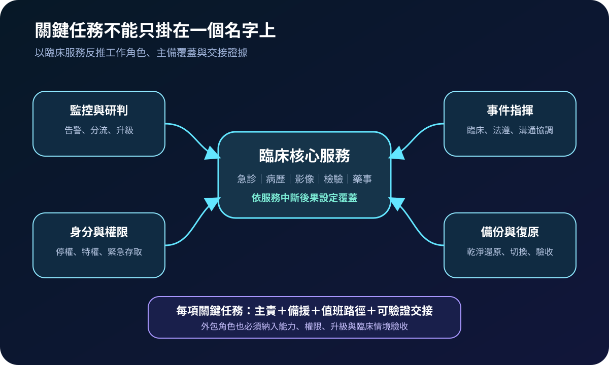
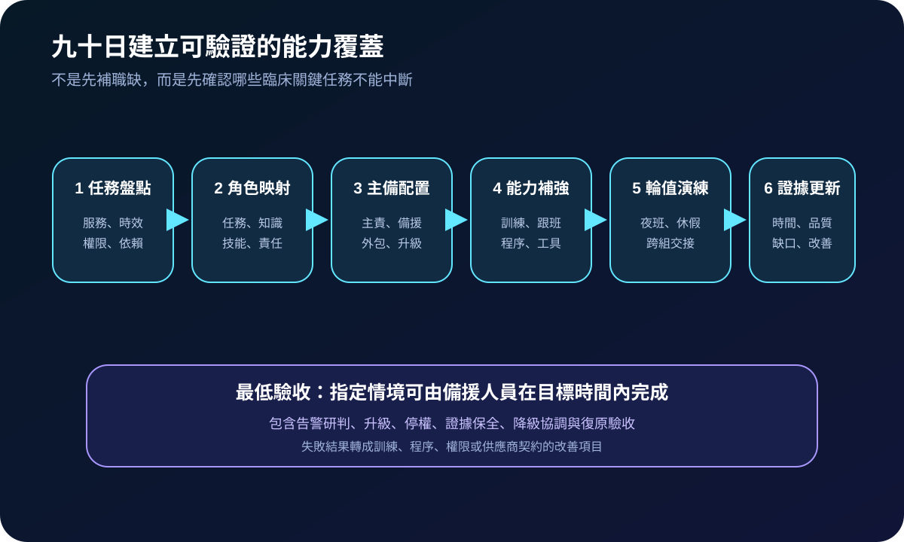
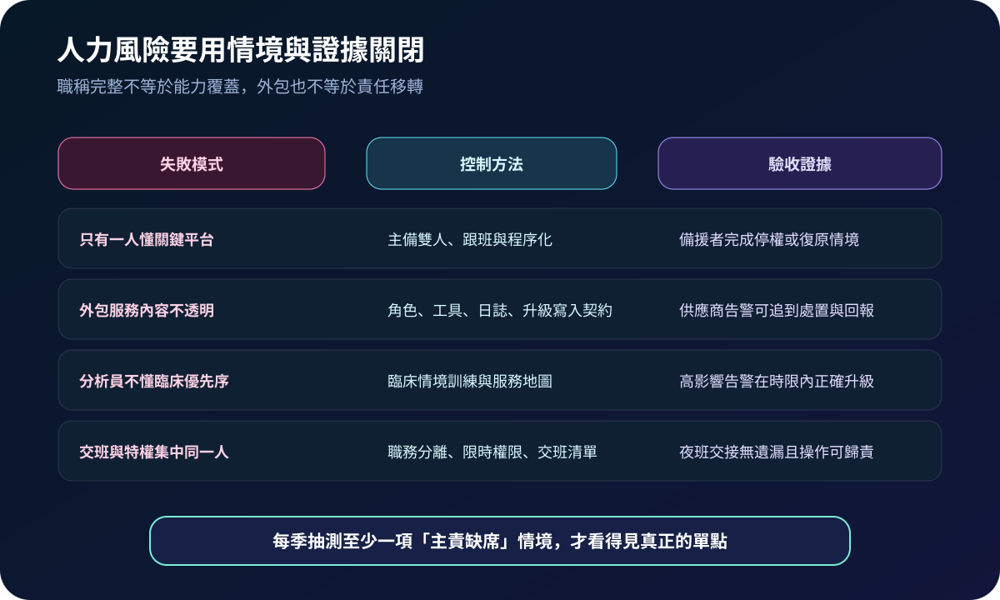

醫療資安國際觀察 · 2026-10-18
醫院資安值班如何避免單點失效：從工作角色到能力覆蓋
作者：Dr. William｜醫療資訊與資安治理實務工作者
醫院可能有完整組織圖，卻仍把告警研判、特權停權、證據保全或乾淨還原集中在少數人身上。能力覆蓋的重點不是職稱數量，而是主責缺席、夜班或供應商失聯時，關鍵任務仍能在臨床容忍時間內完成。
名詞解釋：工作角色不等於職稱
工作角色（work role）描述一組需要完成的任務，以及相關知識與技能；一個人可承擔多個角色，同一角色也可由院內與外部人員共同提供。能力覆蓋則確認每項關鍵任務是否具備主責、備援、必要權限、工具、程序、升級路徑與交接證據。
國際現況與適用邊界
NIST 於 2026 年更新 NICE Framework 元件，加入能力領域與 TKS 撰寫及映射資源，持續以任務、知識、技能及工作角色描述資安工作。英國 NHS 的安全監控評估則要求組織定期檢視監控人員的技能、工具與角色，涵蓋外包人員，並讓相關人員理解必要功能及支援系統；其事件演練工具另以情境檢驗跨角色回應能力。
台灣適用原則：NIST NICE 是工作描述框架，NHS 評估準則適用英國醫療體系，均不是台灣醫療機構的直接法定義務。可借用任務映射、主備覆蓋、外包驗收及情境演練方法；實際人力、值班、勞動條件、個資與醫療責任仍依台灣法令及院內權責設計。
規劃：以五類任務建立覆蓋表
範圍可先涵蓋監控研判、事件指揮、身分與特權處置、證據保全、備份復原及供應商協調。每項任務記錄臨床依賴、目標完成時間、主責、備援、夜間聯絡、必要權限、工具、程序與替代方案。驗收指標可包含雙人覆蓋率、備援獨立完成率、夜班升級時間、交班缺漏率、外包服務證據完整率及演練改善關閉率。
實作：九十日建立可驗證覆蓋
- 盤點任務：從高影響臨床服務列出中斷時必須執行的資安與復原工作。
- 映射角色：以任務、知識、技能與責任描述角色，不直接等同現有職稱。
- 配置主備：指定主責、備援、值班與外包介面，避免同一人同時握有申請、核准與執行權。
- 補足能力：透過跟班、文件化、受控權限、工具熟悉與臨床情境訓練關閉缺口。
- 輪值演練：抽測主責缺席、夜間高影響告警、供應商失聯或備份管理平台不可用。
- 更新證據：記錄完成時間、判斷品質、權限問題與交接缺口，納入訓練及契約改善。

風險：外包與多人編制仍可能有單點
常見失敗包括只有一人懂關鍵平台、外包服務僅交付報表、分析員不理解臨床優先序、備援人員沒有實際權限，以及交班與特權操作集中同一人。緩解方式包括主備雙人、職務分離、限時權限、臨床服務地圖、供應商證據條款、帶外聯絡與定期主責缺席演練。

可執行清單
- 高影響臨床服務所需的資安任務是否已逐項列出？
- 每項關鍵任務是否至少有一名具權限且完成演練的備援者？
- 夜班、休假、離職及供應商失聯時是否有明確升級路徑？
- 外包人員的角色、工具、日誌、回報時限與交接責任是否可驗收？
- 監控人員是否理解臨床必要功能，而非只依技術嚴重度排序？
- 最近一季是否實測主責缺席情境並關閉失敗項目？
來源
- NIST｜NICE Releases NICE Framework Components v2.2.0（發布：2026-04-28；查閱：2026-10-18）
- NIST｜NICE Framework Current Versions（頁面更新：2026-05-18；查閱：2026-10-18）
- NHS England｜Principle C1: Security monitoring（頁面更新日期未標示；查閱：2026-10-18）
- NHS England｜Cyber Incident Response Exercise（頁面更新：2026-06-30；查閱：2026-10-18）
內容說明
本文依健康台灣深耕計畫相關治理內容整理，並參考 NIST NICE 與 NHS 公開資料，提出醫療資安工作角色、主備覆蓋、外包邊界、輪值演練與驗收證據方法；不把國外框架或英國評估準則視為台灣法定義務，也不取代院內臨床治理、人力制度、個資法遵或法律意見。